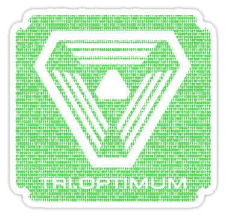

Here are isolated files from the game. They are strictly for personal and educational purposes. By examinating the files you can get better understanding of overall importance of sounds and visuals in making any kind of emotional experience, either in the form of a videogame or a movie. I believe that every audio-visual work is a rich source of information of color, light, objects, movement, message etc. that are aranged (on purpose or not) in a way that creates an emotional experience and some philosophical message. When you take a picture of your dog or your morning coffee spilled all over important work documents just to share this absurd abomination of a fail with your friends to later laugh at, you are creating this kind of experience.
These Artworks are crated by Gareth Hinds. This work dictated the whole feel and experience of the game. Don't forget to check out his website -> https://www.garethhinds.com/wp/
The main composers of System Shock 2 are Josh Randall, Ramin Djawadi and Eric Brosius. Thank you gentlemen for making the game's atmosphere so good.
Contains: bitmap, book, editor, fam, fonts, iface, intrface, mesh, motions, obj, onjicon, pal, snd, snd2, song and strings. All these files are in .crf format. You can easily open them with DragonUnPacker software.